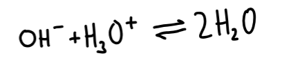
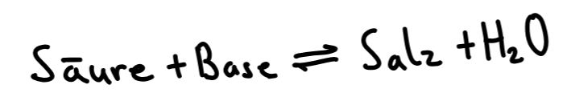

Wenn eine saure Lösung mit einer basischen Lösung reagiert spricht man von einer Neutralisationsreaktion. Die Hydroxid-Ionen der basischen Lösung reagieren dabei mit den Hydronium-Ionen der sauren Lösung zu Wasser-Molekülen

Zurück bleibt eine Salzlösung in welcher sich die Ionen der vorherigen Säure und Base befinden.
